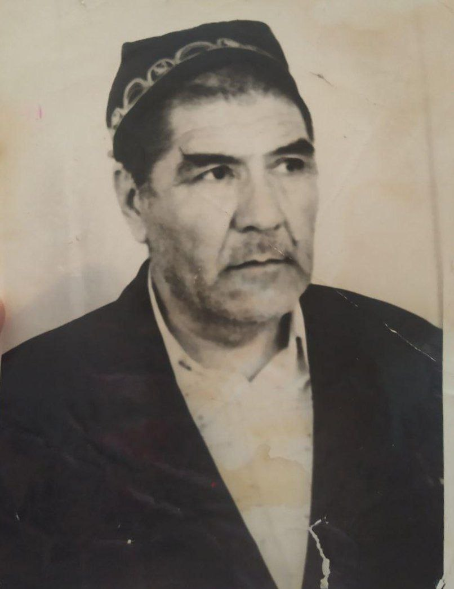

Шералиев Эрали
11 мая 1925 - 11 февраля 2003
химик • математик • физик • снайпер • радист
Происхождение
Дата и место рождения
Шералиев Эрали, родился 11 мая 1925 года в Фергане, он был человеком редкой судьбы и великой мудрости. Его жизнь, наполненная событиями и достижениями, стала примером силы духа, самоотверженности и любви к знаниям.
Родители и их влияние на сына
Родился он в состоятельной семье, его отец был уважаемым человеком — начальником милиции в Фергане. С детства Эрали рос в атмосфере уважения к труду, порядку и ответственности. Он проявлял отличные способности к учёбе, всегда был среди лучших учеников в школе. Математика, физика и другие точные науки давались ему легко, что сразу выделяло его среди сверстников. Будучи прилежным и трудолюбивым учеником, Эрали мечтал о будущем, связанном с наукой и техникой. Однако его юные годы были прерваны грозной тенью войны.
Юность
Война всегда приходит внезапно
В 1943 году, когда ему было всего 17 лет, началась новая глава его жизни — война. Он, как и многие молодые парни того времени, был призван на фронт, оставив за спиной свои мечты и планы на будущее. До начала Второй мировой войны Эрали носил фамилию Юлдашев. Однако, когда пришла война, и перед ним встал выбор, он принял важное решение: взять имя отца в качестве фамилии – Шералиев. Так он увековечил память своего отца, человека, которого уважал и любил. Ему выпало сражаться на войне в рядах 6-й стрелковой бригады. Там он был и снайпером, и радистом. Война забрала много сил и времени, но она также закалила его характер. С каждым боем, с каждой задачей, которую он выполнял в роли радиста, он становился только сильнее. Военные годы оставили в его душе отпечаток, который он нёс через всю жизнь. Единственный документ который связан с армией и Эрали, это Военно-пересыльные пункты и запасные полки взятый с сайта Память народа в которых он записан под 45 порядковым номером
Нажмите чтобы увидеть изображение.

Истории с фронта
Шералиев Эрали, будучи снайпером на фронте, часто делился с моей матерью историями о том, как суровы были условия войны. Он рассказывал, что снайперам нередко приходилось часами, а порой и сутками, лежать неподвижно, ожидая вражеских атак. Это была работа, требовавшая невероятного терпения и выдержки. Малейшее движение могло выдать их позицию, и поэтому приходилось терпеть боль, усталость, холод и голод. Особенно тяжёлыми были зимние месяцы, когда мороз сковывал всё вокруг. В таких условиях выживание становилось настоящим испытанием. Эрали рассказывал, как они спасались от голода и холода, сося сало — жир, который могли раздобыть, помогал сохранить тепло в теле и хоть как-то утолить голод. Этот простой кусок сала становился настоящим спасением в те страшные дни. Однако иногда и сала не было. В такие моменты приходилось прибегать к крайним мерам. Одной из самых трудных ситуаций был голод настолько сильный, что приходилось есть кожаные ремни. Кожа, конечно, не могла дать много питательных веществ, но это хоть как-то помогало обмануть голод и продержаться ещё немного. Эти истории показывали, насколько тяжело было солдатам на войне, и насколько сильно желание выжить и бороться за свою родину. Шералиев Эрали, несмотря на все лишения и трудности, продолжал выполнять свой долг. Эти воспоминания оставили неизгладимый след в его душе и стали частью его жизненного опыта, который он передал своей семье. Он как опытный радист на фронте, был настоящим мастером азбуки Морзе. Этот навык спасал жизни и передавал важные сообщения в разгар боя. Свой богатый опыт и знания он не оставил на полях сражений — после войны он продолжил передавать их своим близким. Особенное внимание он уделял своей младшей дочери, моей матери.
Ранен не значит побеждён
Во время войны Эрали не раз сталкивался с опасностью и трудностями, и одна из самых тяжёлых ситуаций произошла, когда он получил ранение в ногу. Рана оказалась настолько серьёзной, что началось заражение, и его нога начала гнить. В условиях войны медицинская помощь была далеко не всегда доступна, и ему пришлось бороться за свою жизнь всеми возможными способами. Его отец, имеющий определённые знания в лечении, помогал ему, используя всё, что было под рукой. Чтобы выжить и восстановиться, Эрали пришлось прибегнуть к самым экстремальным мерам. Он ел змей и земляных червей, которые служили источником белка и помогали поддерживать силы в условиях голода и недоступности нормальной пищи. Эти суровые испытания, через которые он прошёл, закалили его дух и физическую выносливость. Благодаря помощи отца и его собственной решимости, он смог вылечить ногу и вернуться к службе. Эти моменты стали ещё одним доказательством его невероятной силы воли и стремления выжить, несмотря на любые трудности. Истории о том, как он ел змей и червей, чтобы спастись, стали частью семейных легенд, показывающих его стойкость и умение справляться с самыми тяжёлыми испытаниями.
События после войны
Нельзя чтобы знания пропали
Благодаря терпению и мастерству Эрали, его дочь не только овладела азбукой Морзе, но и полюбила радиоспорт. Это стало не просто увлечением, а настоящим соревнованием. Вскоре её навыки настолько возросли, что она начала участвовать в чемпионатах. Благодаря отцовской науке и собственной усердной работе, она сумела добиться выдающихся результатов. На одном из таких соревнований её мастерство принесло ей победу и путёвку в знаменитый лагерь "Артек". Это было признанием её таланта и отточенных навыков. Для неё это стало не только достижением, но и символом крепкой связи с отцом, который передал ей свои знания и любовь к радиоспорту.
Основной цикл жизни
Помощь отцу всегда важна
С юных лет проявлял не только стремление к знаниям, но и готовность помогать другим, особенно своему отцу, который был начальником милиции. Эрали оказывал своему отцу значительную помощь в его работе, исполняя роль агента под прикрытием. Это была опасная работа, но его смекалка и умение незаметно вести наблюдение помогали в поимке преступников. За свои заслуги он был неоднократно награждён грамотами, что показывало его значимый вклад в обеспечение правопорядка.
Работа не самое важное в жизни
После войны, вернувшись на родину, Эрали решил посвятить свою жизнь учёбе и работе. В его жизни было множество учебных заведений, где он развивал свои знания. Его интерес к электронике, который зародился на фронте, как радиста, перерос в настоящую страсть. Он умел собирать сложные механизмы и приборы буквально с нуля, мог починить двигатель или любое устройство, что поражало всех вокруг. Однако его карьера не ограничивалась только техникой. Он работал в условиях, где была опасность отравления радиактивными веществами. Когда он заметил, что его коллеги начали терять волосы, он понял, что такая работа опасна для здоровья. Не задумываясь долго, он принял решение уйти и сосредоточиться на своей любимой науке. Это решение стало ещё одним примером его мудрости и осторожности.
В чём сила? Сила в знаниях.
За свою жизнь он окончил два института и три техникума, что сделало его настоящим примером неутомимого стремления к образованию. Одним из его значимых достижений было окончание Рязанского высшего физико-математического института, что дало ему глубокие знания в области точных наук. После завершения обучения Эрали посвятил свою жизнь преподаванию. Он работал в колледжах, школах и высших учебных заведениях, где передавал свои знания молодым поколениям. Он не просто учил — он вдохновлял на достижения и самосовершенствование. Многообразие его опыта и широта знаний позволяли ему преподавать разные предметы, от математики до радиоэлектроники. Его навыки, полученные как на фронте, так и в учебных заведениях, сделали его одним из самых уважаемых преподавателей, к которому студенты всегда обращались за советом и поддержкой. Эрали достиг учёной степени и стал преподавателем в высших учебных заведениях Узбекистана. Его ученики уважали его за глубину знаний и умение объяснять сложные вещи простым языком. Вокруг него всегда было множество людей, которые искали его советов и поддержки.
Последниe годы жизни
Всегда нужно помогать другим
В последние годы своей жизни он посвятил себя тому, чтобы делать мир вокруг лучше и помогать людям. В своём городе он был самым известным радиотехником, и его мастерство было настолько признано, что к нему обращались не только местные жители, но и люди из других регионов. Многие друзья из радиоспорта часто приходили к нему в гости, чтобы пообщаться и обсудить новые идеи, делились своими достижениями и вспоминали прошлое. Его мастерство было востребовано даже в Ташкенте — оттуда поступали заказы на сборку радиоприёмников и сложных устройств. Эрали изготавливал их собственными руками, используя свой огромный опыт, накопленный за долгие годы. Своими руками он создавал радиоаппаратуру, которая поражала своей точностью и качеством. Помимо этого, Эрали продолжал помогать молодым студентам, помогая говориться к контрольным и экзаменам в институтах. Его консультации и советы были ценны для тех, кто учился и стремился к знаниям. Благодаря его помощи многие студенты смогли успешно сдать экзамены и достичь высоких результатов в учёбе. Шералиев Эрали до конца своих дней оставался не только умелым мастером, но и человеком, готовым всегда прийти на помощь другим. Его дом был местом, где всегда собирались люди, которые уважали его за мудрость, доброту и невероятное умение разбираться в технике.
Ошибка врачей
Эрали Шералиев за свою долгую и насыщенную жизнь перенёс два инсульта, что сильно сказалось на его здоровье. Несмотря на эти тяжёлые удары судьбы, он продолжал работать, помогать людям и жить полной жизнью. Однако в последние дни его силы начали угасать. Когда ему стало плохо, он попал в больницу, где врачи сделали всё возможное, чтобы улучшить его состояние. Первое время казалось, что он идёт на поправку, и была надежда на его выздоровление. Однако случилось непредвиденное — врачи решили ввести ему какой-то укол, который вызвал негативную реакцию в его организме. Эрали стало хуже, и, к сожалению, на следующий день после этого укола он скончался. Его смерть стала большой трагедией для семьи и всех, кто знал и уважал его. Ошибка врачей, которая привела к его кончине, была тяжёлым ударом, ведь он был на пути к выздоровлению, но судьба распорядилась иначе.
Разлад в семье после ухода из жизни
К сожалению, сложные семейные обстоятельства, которые произошли после его ухода, привели к тому, что многие данные о его жизни, а также артефакты, которые могли бы сохранить память о нём, оказались утрачены. Это большая утрата, ведь каждый предмет, каждое его достижение хранили частичку истории не только одной семьи, но и целого поколения. Разногласия между его детьми, стали причиной, по которой важные документы, личные вещи, связанные с его жизнью и вкладом в науку и технику, со временем начали исчезать. Это были награды, рабочие тетради, приборы, которые он собирал своими руками, воспоминания, записанные на бумаге. Всё это могло бы быть ценным источником для того, чтобы передать будущему поколению, чтобы история Эрали жила и дальше. Такая утрата - это больно не только для семьи, но и для тех, кто мог бы узнать о нём через эти артефакты. Однако, несмотря на утраченные вещи, память о человеке живёт в сердцах тех, кто его знал. Каждый рассказ, каждая деталь, которую, помнит каждый кто его знал, сохраняет частичку его жизни. Это память, которую уже не смогут разрушить никакие обстоятельства.